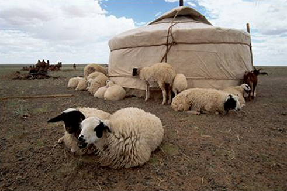

Sheep

The Mongols call a sheep 'khoni’. Mutton is the most favorite meat of the Mongols . The original Mongolian sheep had a straight and coarse hair, it is good for tough weather. Skin is for coats and shoes, wool is for felt, carpet and clothes, milk is for sour cream and cheese. The Sheep is a symbol of submissiveness and weakness since it keeps quiet when it is killed.